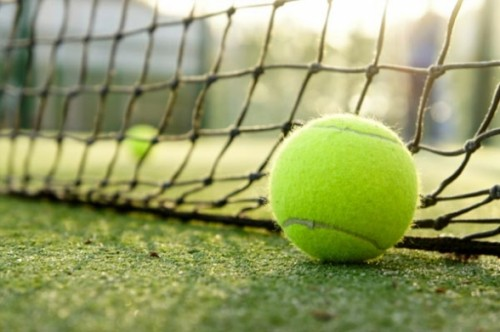

Reglas Básicas
El pádel es un deporte de raqueta que se juega en parejas, y su objetivo es marcar puntos al oponente mediante la estrategia y la habilidad. Para disfrutar de una partida de pádel con éxito, es crucial conocer y respetar las siguientes reglas:
- Servicio: El saque se realiza desde detrás de la línea de fondo y debe cruzar la red y caer en el cuadro de servicio contrario sin tocar las paredes.
- Bote del saque: El saque debe botar en el suelo antes de ser golpeado por el receptor.
- Doble bote: La pelota debe tocar el suelo una vez en el lado del servidor y otra vez en el lado receptor antes de ser golpeada de forma directa por cualquiera de los jugadores.
- Paredes y alambrada: La pelota puede rebotar en las paredes laterales y traseras, así como en la alambrada, pero no puede tocar el techo ni ninguna otra estructura fuera de la cancha.
- Volea: Se permite golpear la pelota en el aire (volea) siempre y cuando estés fuera de la zona de saque y no pises la línea de fondo.
- Puntuación: El juego se juega a puntos, con 15, 30, 40 y juego. Debes ganar dos puntos consecutivos para ganar un juego, y se necesita una ventaja de al menos dos puntos para ganar el set.
- Cambio de campo: Los jugadores cambian de lado después de cada juego impar en el marcador.
- Zona de no-volea: Existe una zona de no-volea, conocida como "zona de bandeja", que incluye el área cercana a la red. No se permite golpear la pelota en el aire dentro de esta zona.
- Toque de la red: El contacto con la red o sus postes durante el juego resulta en la pérdida del punto.
- Let: Si el saque toca la red pero pasa al campo contrario, se repite el servicio sin penalización.
- Tiempo entre puntos: Se debe respetar un tiempo razonable entre puntos para mantener el flujo del juego.
- Saques de lado: Los saques deben hacerse desde el lado derecho hacia el lado derecho y desde el lado izquierdo hacia el lado izquierdo de la cancha.